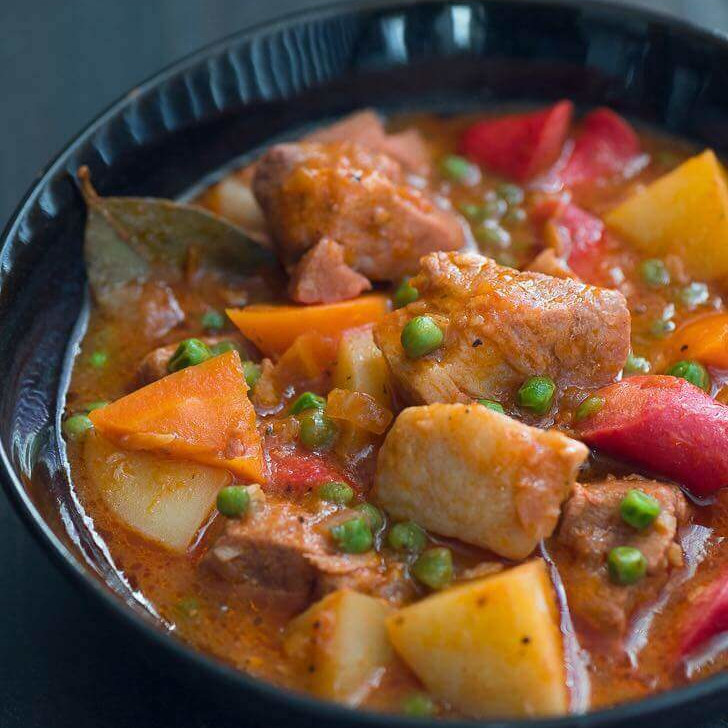

← Back to Recipe List
Pork Afritada

Description
Pork Afritada is a classic Filipino stew made with pork, potatoes, carrots, and bell peppers simmered
in a tomato-based sauce. It's similar to other Filipino tomato-based stews like menudo or mechado, but
each has its own twist. Afritada is usually less complex, focusing more on the sweetness of tomatoes
and vegetables.
The best side dish for Afritada is rice. A cup of warm white rice is enough to enjoy it and find your
meal more appetizing when you poured the sauce over the rice.
Ingredients
Servings: Good for 4 people
- 2 lbs pork shoulder, cubed
- 1 piece Knorr Pork Cube
- 3 pieces hotdogs, sliced
- 2 pieces carrots, sliced into small wedges
- 2 pieces potato, quartered
- 8 oz. tomato sauce
- 3/4 cup green peas
- 1 piece tomato, cubed
- 4 pieces dried bay leaves
- 1 piece onion, chopped
- 6 cloves of garlic, chopped
- 3 cups of water
- 3 tablespoons cooking oil
- Salt and ground black pepper to taste
How to Cook
- Heat oil in a cooking pot.
- Once the oil gets hot, sauté onion and garlic until onion softens.
- Add pork, sauté until brown.
- Pour tomato sauce and water. Stir and let it boil.
-
Add Knorr Pork Cube. Stir. Add dried bay leaves. Cover and cook in medium heat for 30 minutes.
Note: Add more water if needed.
- Add hotdogs. Cook for 10 minutes.
- Add carrot and potato. Cover and cook for 8 minutes.
- Add green peas. Cook for 3 to 5 minutes.
- Season with salt and ground black pepper.
- Transfer to a serving plate.
- Serve and enjoy the meal.
Back to the top